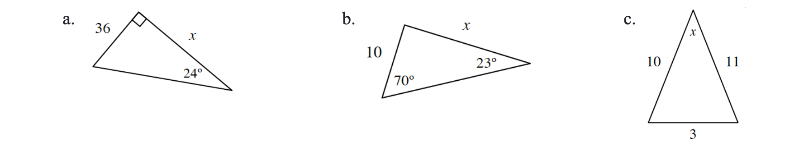
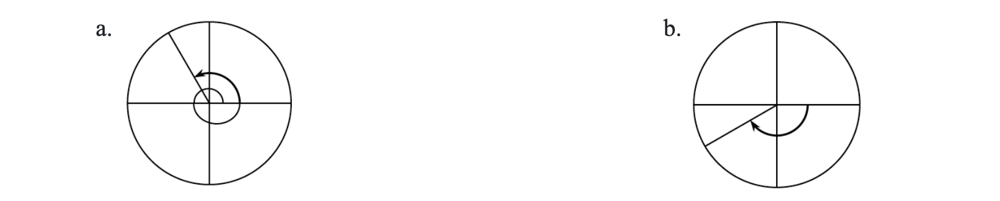

Solve for \(x\) in each of the following triangles. What methods can be used for each part?

Solve each equation without a calculator.
\(8=2^{4x}\)
\(2=8^x\)
\(1=e^x\)
\(\log_4(2)=x\)
Rewrite each expression in the form \(a\cdot b^x\).
\(5^{(x-2)}\)
\(9^{(1/2)x+1}\)
\(60\left(\frac{2}{3}\right)^{2x-2}\)
Simplify: \(\large{\frac{x^{2}y^{-3}+x^{-2}y}{y^{-1}+x^{-2}}}\)
Many times when solving trigonometric equations, the solutions are not convenient values on the unit circle where the answers are exact. For example, \(2\sin(x)=1\) yields \(x=\sin^{-1}\left(\frac{1}{2}\right)\) and the exact solution between \(-\frac{\pi}{2}\) and \(\frac{\pi}{2}\) is \(\frac{\pi}{6}\).
Solve \(\sin(y)=4\) for \(y\) and give a decimal approximation.
Is this the only solution between \(0\) and \(2\pi\)? Use what you know about the symmetry of the sine function and the unit circle to determine the other solution between \(0\) and \(2\pi\).
Graph each of the following functions and state the domain of each function.
\(f(x)=\frac{5}{x+2}\)
\(g(x)=\sqrt{3-x}\)
\(h(x)=\frac{1}{x^2-1}\)
\(j(x)=5x^3+7\)
A shadow of Kate cast on a wall by a light on the ground, which is \(8\) meters from the wall. Kate is \(162\) centimeters tall and is \(3\) meters from the wall. Express \(d\) as a function of the height of the shadow, \(h\).
Kristina and Darrin are running around a circular track with the same angular speed. Darrin is running on the inside lane which has radius \(40\) ft and Kristina is running on the outside lane which has radius \(44\) ft. If Kristina is running at a rate of \(11\) ft per second, how fast is Darrin running?
Given \(\triangle HAT\) where \(\angle H=25^\circ\) and \(HA=10\).
What is a possible length of \(\overline{AT}\) that will yield two possible triangles? Sketch a diagram of the triangle to demonstrate this situation.
What are the possible lengths for \(\overline{AT}\) that will make exactly one triangle?
For what values of \(\overline{AT}\) is no triangle possible?
If \(y=\large{\frac{ax+b}{2x+c}}\) has a vertical asymptote at \(x=-3\) and a horizontal asymptote at \(y=5\), what are the values of \(a\) and \(c\)?
Solve each of the following equations. Use \(u\)-substitution to make the process easier.
\((x^2+x-2)^2-2(x^2+x-2)=8\)
\(\frac{12}{\sqrt{x^2+5}}+\sqrt{x^2+5}=7\)
A colony of grasshoppers have infested a farmer’s land. The farmer investigated the area one week ago and found that in one acre there were approximately \(1000\) grasshoppers. He also determines that the population of the insects can be modeled by the function \(P(t)=1000e^{0.2t}\), where \(t\) is the time in days from his initial inspection.
Assuming the grasshoppers continue to increase according to the farmer’s model, what is the population now?
The crops will be destroyed if the population reaches \(20{,}000\) per acre. How long does the farmer have before this occurs?
Below are two of the special angles that are used in the unit circle. Identify the radian measure for each angle shown. Then state the sine, cosine, and tangent of the angle.

Solve each of the following inequalities.
\(\frac{x-4}{x-1}>\frac{x}{3}+4\)
\(x^4-14x^2+40\leq0\)
A sales department currently has \(30\) salespeople who each average \($50{,}000\) in monthly sales. A study commissioned by the department manager concludes that for each additional salesperson hired, the average monthly sales per salesperson will decrease by \($1{,}000\). Determine the maximum revenue if the department hires the optimal number of salespeople.
Write an equation for a fourth-degree polynomial function that has a triple root at \(x=2\), a root at \(x=-7\), and passes through the point \((-1,-9)\).